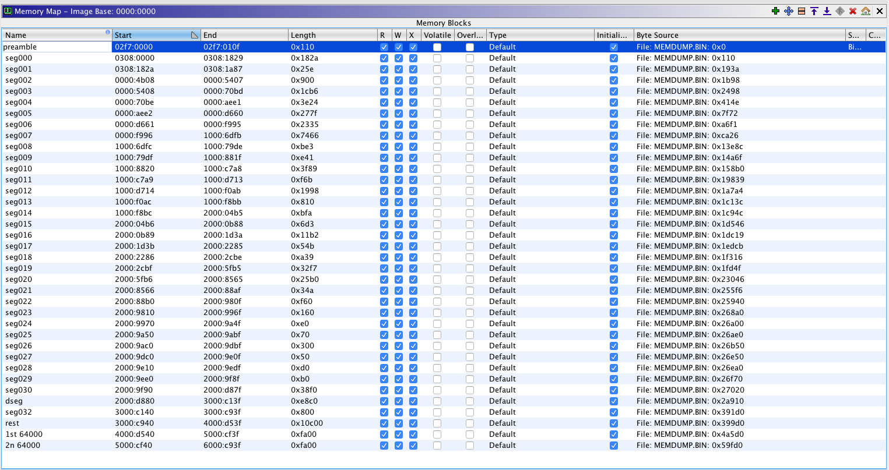
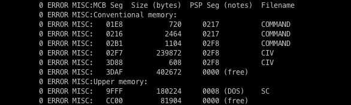
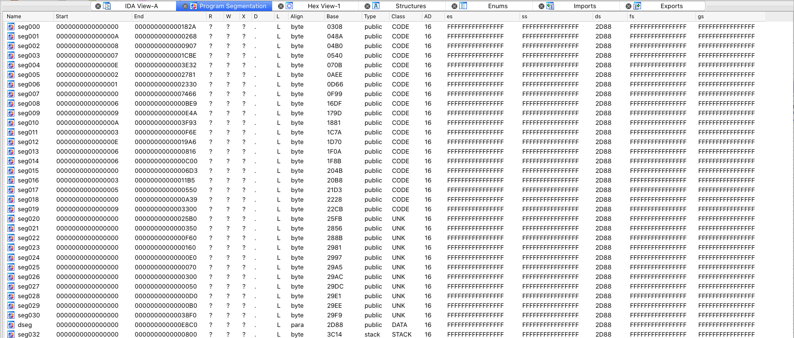

This is the map for the memory dump of MSDOS version of Civilization Classic (474.04). Memory dump was captured from Dosbox-x (version dosbox-x-macosx-x64-20190301171645).
Note: there can be differences in more recent version of DosBox-x with the .exe start address, i.e. where the seg000 is mapped. This has to be adjusted in IDA Pro and Ghidra

Memory dump taken using Dosbox-x debuggerDOS MCBS - Show Memory Control Block chain.MEMDUMPBIN [s]:[o] [len] - Write memory to file memdump.bin.
Output of DOS MCBS

Note: len is decimal
Sample command to grab memory dump that can be imported to Ghidra
MEMDUMBIN 01e8:0000 909681
Reference to IDA Pro
Segments have been mapped to reflect what can be seen in IDA Pro. IDA Pro splits code to segments automatically, it just needs right base. Maps in both programs, adjusted to start at base segment 0308, to allow seamless cross reference between Dosbox-x debugger, Ghidra and IDA Pro.

*Note: IDA Pro references CIV_UNP.EXE which is CIV.EXE unpacked.
More on the segments calculation
How did we come up with 0x0308 for the base segmentexactly if CIV starts at 02F7 as per DOS MCBS?
This has to do with the fact that 0x3080-0x2f70=0x110 bytes is some junk that I don’t understand at the moment and actual assembly instructions start at 0x308.
Note: Segment address has to be multiplied by 0x10 to get the absolute memory address